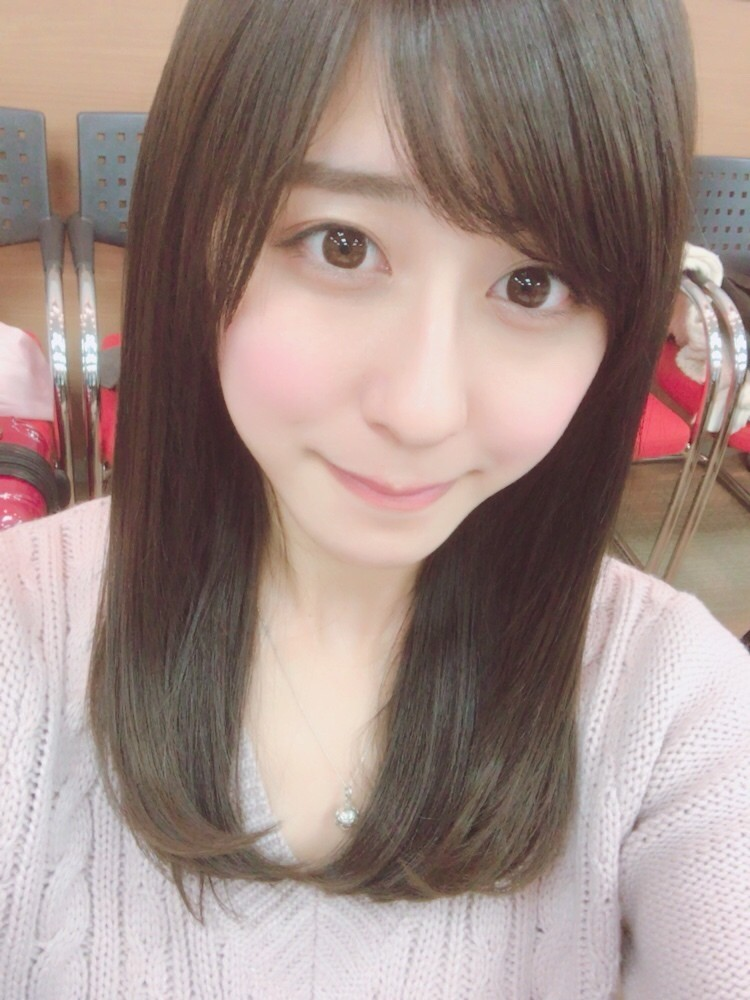
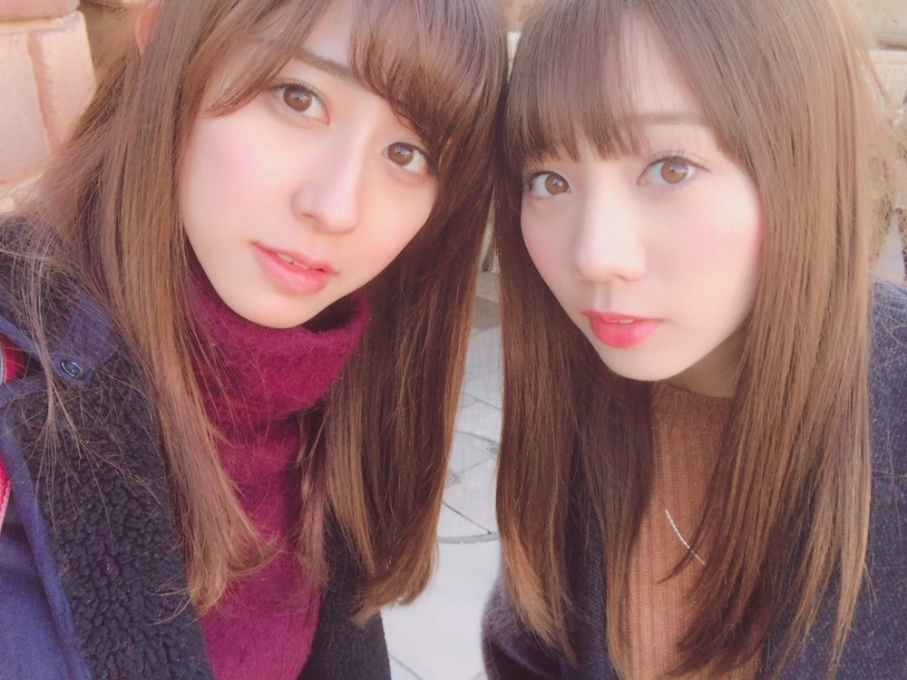
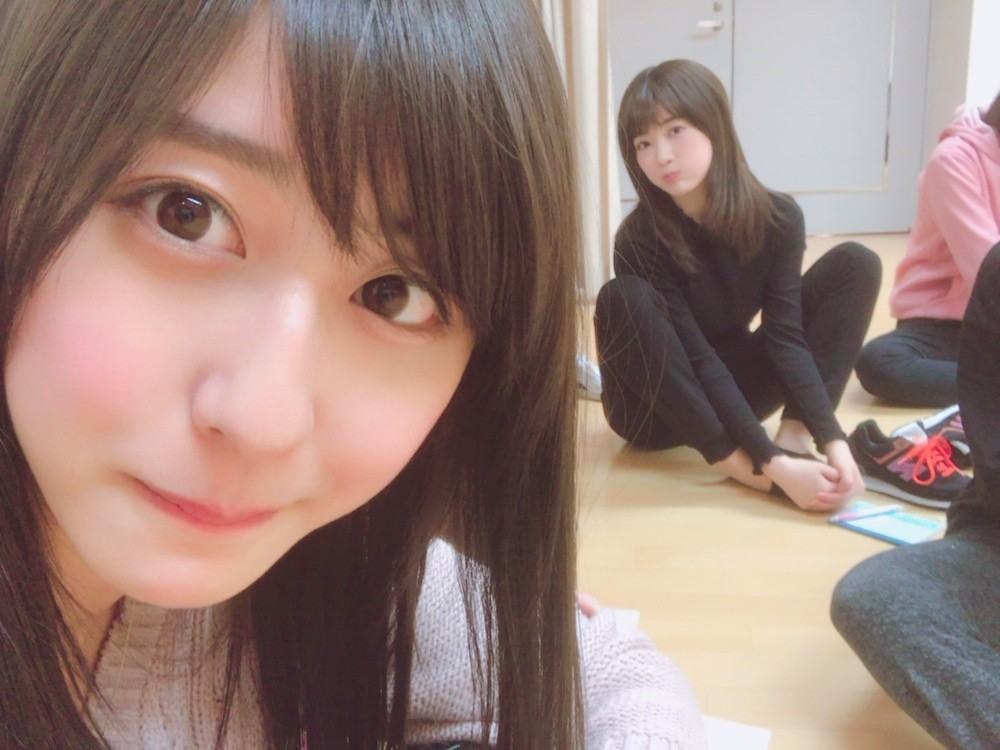

| 2017/02 01 Wed | 斎藤ちはる 2月 |
ちはるーむへようこそ
2月になりましたね！
2017年になってからもう1ヶ月が終わった
ってことが信じられない...
時間経つの早すぎる...
2月は、私にとって特別な月☺︎
なんたって誕生日があるからね〜♡♡
17日だよ！
忘れないでね！笑
記念すべき20歳になる日。
そしてななみんの卒業と、
BIRTHDAY LIVE。
こうしてリハするのも最後なのかな〜とか
何気なく話す時間もなくなっちゃうのかな〜とか
考え出すと色々と寂しいけど
ななみんが清々しい気分で卒業出来るように
ちゃんと送り出さなきゃ。
BIRTHDAY LIVEの準備も着々と進行中◎
自分の歌っているユニット曲が少ないので
どうしても何曲も連続で出ないことが
あると思いますが...(> <)
皆さん探してくれたら嬉しいな。
やっぱりユニット曲沢山歌いたい...！
歌えるように頑張ろう。
そして2月になったので心機一転、
美容院に行ってきました◎
そんなガラッと変えた訳ではないからあれだけど
美容院に行くと気分もさっぱりするし
サラサラな髪の毛になるとついつい
触りたくなっちゃうし
髪色がお気に入りだと自慢したくなっちゃう。

髪色はブルージュ。
いつもよりブルー多めだったみたいです！
写真だとあまりよく分からないかも(> <)

でも少し前に撮った写真と比べてみると全然違う！
愛未と双子みたいだね☺︎☺︎
髪色も長さも前髪の感じも似てる。
----------------------------------------♡
♬ ChihaMusic
「さくら」ケツメイシさん
2月になって、何故か
春が恋しくなってしまって
聞きたくなった曲。
ワクワクする春の季節だけど
切なくて美しい歌詞が
何とも言えない心地よさで
大好きな曲。
昔よく車の中で聴きながら
家族で歌ってたな〜
"さくら舞い散る中に
忘れた記憶と
君の声が戻ってくる"
なんて切ない。
そして綺麗なんだろう。

ストレッチ中のちま。
19歳になっても可愛い。
愛未と一緒にいつも、
うちらが男だったら絶対ちまと付き合ってるよね！
っていう話をしてるんだ( ¨̮ )笑
おやすみ
斎藤ちはる